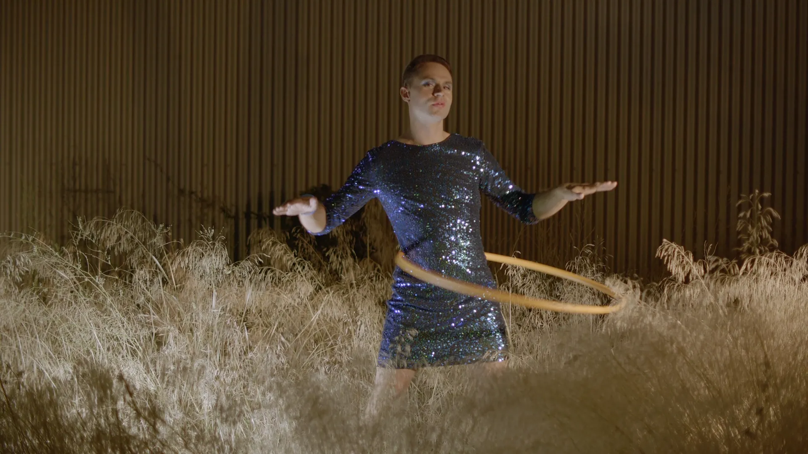
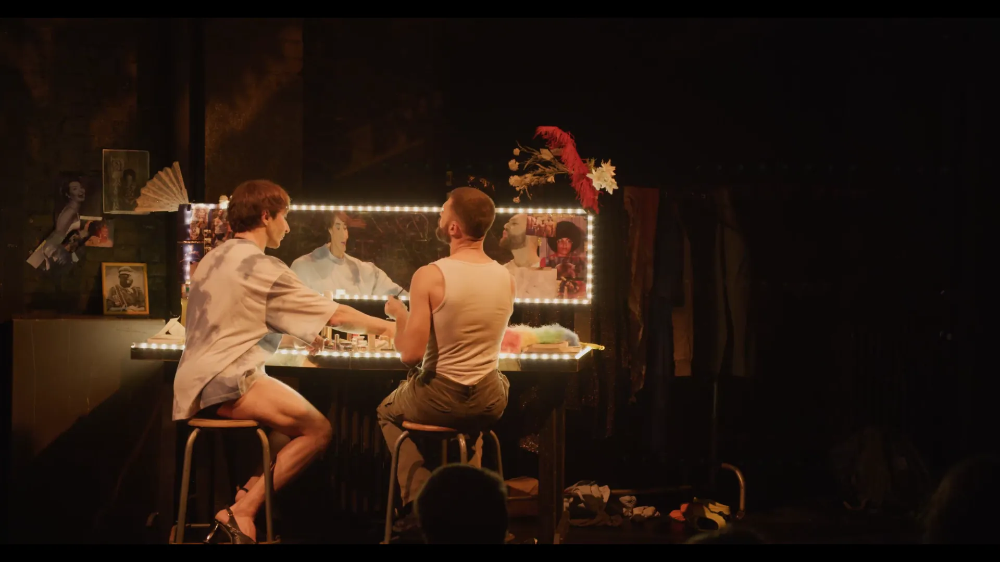
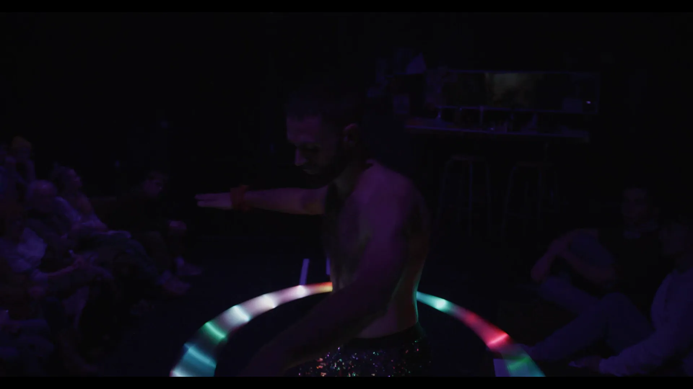
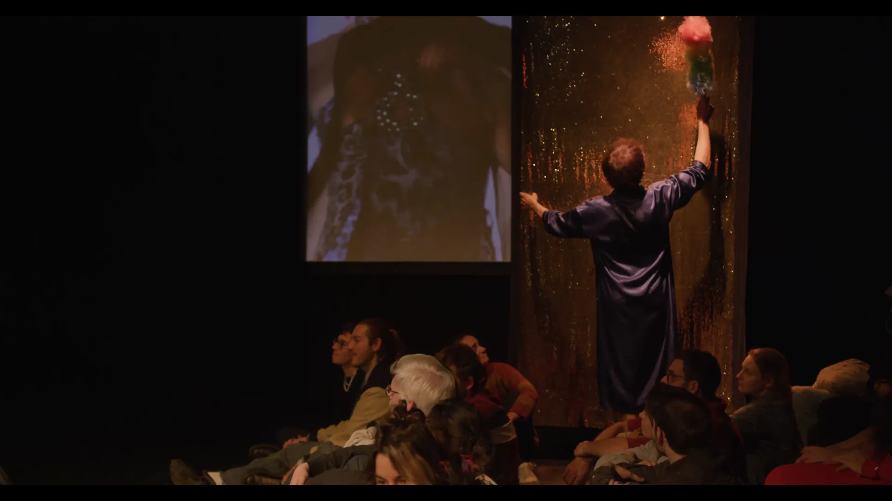
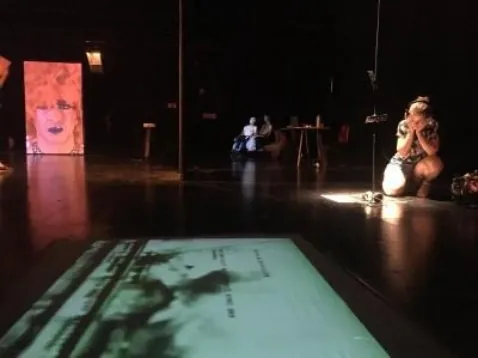
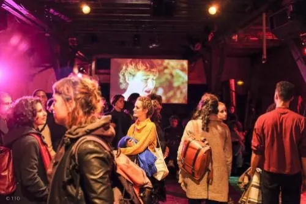

Chef Opérateur / Vidéaste

Théâtre — 2018-2021
Cœurs fugitifs est une expérience scénique autour d’une immense figure de l’art queer latino-américain : Pedro Lemebel, artiste et militant politique chilien, récemment décédé, très populaire dans son pays et encore inconnu en Europe. Dans un dispositif multifrontal, qui croise l’exposition hommage au show et à la performance, des cœurs fugitifs s’évadent de l’œuvre de Lemebel pour nous rapporter des bribes de son univers baroque, marginal et résistant. Acteur·ices et spectateur·ices se frôlent dans ce mémorial sensuel, constitué de corps vivants et d’archives, d’images, de sons et de matières hybrides entre Amérique du Sud et Europe, hier et aujourd’hui. Il se crée une constellation d’étreintes autour d’une œuvre puissante et transgressive, urgente à découvrir, qui interroge nos façons actuelles d’aimer et de lutter.
Écriture et mise en scène : Manon Worms
Textes originaux : Pedro Lemebel
Jeu : Aïssa Busetta, Daniel Macayza-Montes
Scénographie, Vidéo : Jean Doroszczuk
Scénographie, Costumes : Cecilia Galli
Lumières : Lucien Vallé
Conception sonore : Anna Walkenhorst, en collaboration avec Rémi Billardon
Collaboration artistique : Arthur Eskenazi, Ricardo Moreno
Production : Compagnie KRASNA
Soutiens : ARTCENA (Texte lauréat de l’Aide à la Création de Textes Dramatiques dans la catégorie Dramaturgies Plurielles), Friche Belle de Mai (Marseille), RAMDAM-Un Centre d’Art (Lyon), Nouveaux Espaces Latinos (Lyon), Nouveau Théâtre du 8e (Lyon), Collectif La Réplique (Marseille)
Lavoir Moderne Parisien
Friche Belle de Mai (Marseille)
RAMDAM-Un Centre d’Art (Lyon)
Théâtre du Bordeau (Saint-Genis de Pouilly)
TCI Théâtre de la Cité Internationale (Paris)




